Projects
Here is an overview of all the most interesting tech projects I've worked on
recently, although some have been omitted due to a lack of pictures or an
unsatisfactory conclusion.
Water Purification
I was talking with a friend about the water crisis, specifically in
Cape Town, and she argued that many of humanity's biggest problems will
not be solved unless millions of people can work together and put their
individual interests second. Given how unlikely this is to happen, I would
argue that only money and science can provide the alternative solutions
that we need. This project (which falls under the second category) is my
contribution to the solution.
The goal of this project was to distil potable, clean water from seawater,
with a low energy cost. Generally, distillation is extremely inefficient
because so much of the heat is lost to the environment. However, if the
boiling point of water can be reduced to a temperature that can easily
be generated by sunshine, then inefficiency would be inconsequential.
By generating a vacuum in the still, then the difference between the vapor
pressure of the water and the atmospheric pressure will be much lower, and
less energy will be required to boil the water.
Here is a mockup I did in Fusion 360:
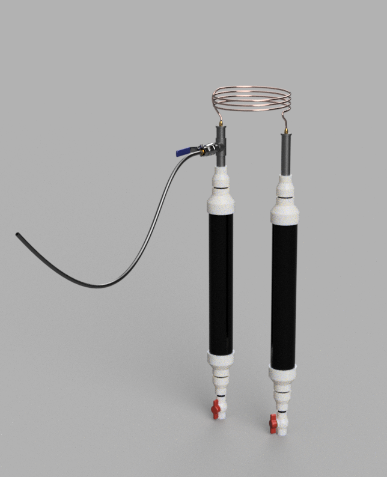
The seawater is stored in one side, the valves are closed, and a pump attached
to the vacuum hose is used to decrease the pressure in the apparatus to
the about 21 mmHg, or the vapor pressure of water. When this pressure is
reached, the water will boil until the pressures equalize again. If one
side is heated and the other is not (accomplished by painting one side black
and the other silver), then the water in the hot side will boil, reach the
refrigeration coil, and condense into the other side.
$100 and a trip to the hardware store later, I have all the components I
need.
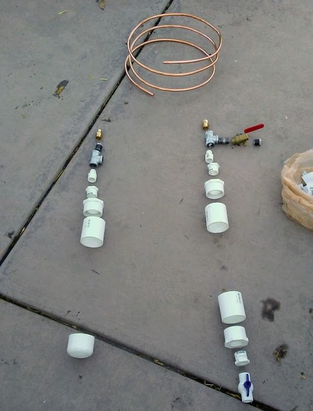
The final parts list was:
- 2ft of 2in pvc piping
- 6in of 1/2in pvc piping
- 2in pvc end cap
- 3 2in pvc couplings
- 2ft of 2in pvc piping
- 3 2in to 1in pvc reducing adapters
- 3 1in to 1/2 in reducing adapters
- 2 1/2in pvc to 1/2 in steel male threaded adapters
- 2 steel 1/2 in Ts
- 2 1/2 in to 3/8 in compression fittings
- 1 1/2in to 3/8in steel reducing adapter
- 1 1/2 in ball and socket valve
- 1 1/2in steel pipe nipple
- 1 pressure gauge with a 3/8 in male stem
- 2ft of 2in pvc piping
- 10ft of 3/8in refrigeration coil
- 10 ft of 3/8in vacuum line
- 1 1/2in to 3/8in barb fitting
- 1 1/2in pvc ball and socket valve
I started by assembling the pvc components, allowing them time to dry while
I screwed together the metal components, using Teflon tape to seal each of the joints.
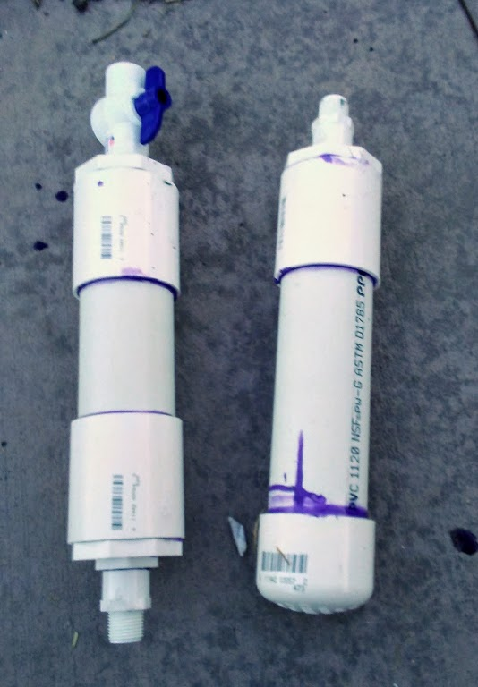
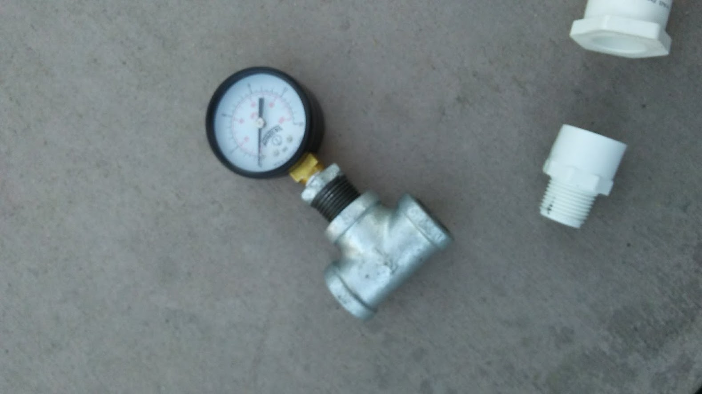
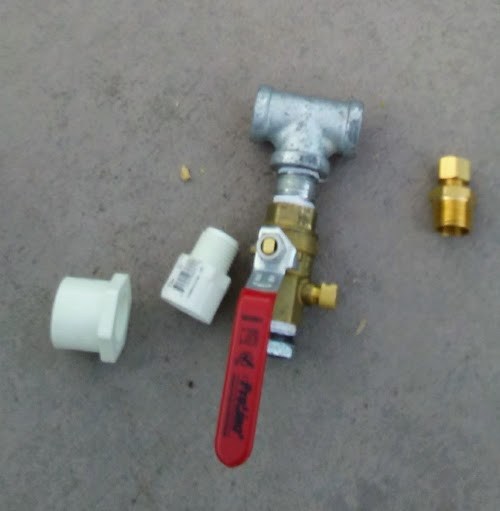
All in all, the project only took one day to complete (excluding testing).
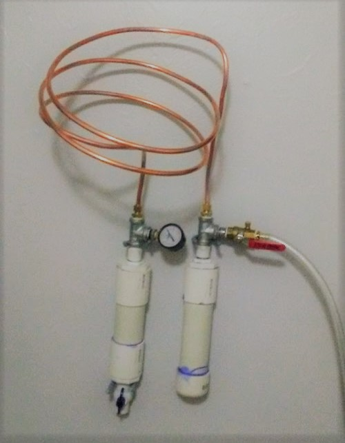
Of course, this prototype is not suitable for continued use - the pcv would
deteriorate in the sun and the volume is too small - but it will work well
for testing. The saltwater side (with the ball and socket valve) will be
painted black so it heats up in the sun, and the volume of water in the
other side will be used to determine the efficiency over time.
The High Altitude Balloon
This project was for an Aerospace class at East High
School, which aimed to obtain pictures of the curvature of the Earth and
collect data on various atmospheric pollutants on the way. The website for '
project HAALO (the balloon project) can be found
here. You will notice
that I put significantly more effort into this website, mostly due to time
constraints.
The balloon project will only be discussed here in its capacity as the most
complicated PCB design and fabrication I have ever done. Other information
can be found on the HAALO website or through East High School.
All of the electronics for the balloon were custom built and designed
specifically for this project. We started by identifying all of the functions
that we wanted to be able to perform...
- Communicate with the ground station
- Read its position using GPS
- Measure temperature, pressure, and humidity
- Measure ozone, carbon monoxide, and particulate matter levels
- Take and transmit pictures taken during flight
- Cut down the balloon if necessary, as required by the FAA
- Save all flight data to a microSD card
- Facilitate easy retrieval (using a beeper or light)
...and then creating a diagram to show the flow of information between
each system:
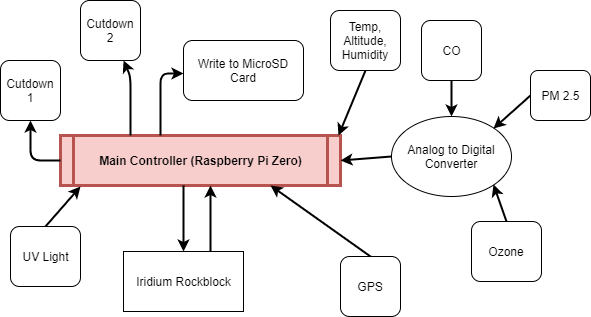
We decided that it would be easier to manage and test the computer if we
created a printed circuit board for it, especially given my experience with
the breadboard STM. I had only very limited experience with etching
PCBs using ferric chloride, and even less with
Fritzing, but we were not to be
deterred!
Given tight budget constraints (other groups of students were working on
obtaining funding, and deserve great praise for their hard work and genius),
we created the parts list before we finished the schematics. For those who
are interested, it can be found
here.
After only a few weeks of planning, the outreach team secured over $2,000
for the completion of the project! All parts were ordered, and we began
work on the schematics. After struggling to find parts that were already
present in the Fritzing libraries, we switched to Altium Circuitmaker
(another free PCB design software) because it had better support for custom
components. Here is the schematic, version 10:
 By using JST connectors for all of the sensors, the computer could be kept
warm within the housing while the sensors were exposed to the environment
(so they can take data). Unfortunately, the complexity of the board combined
with size constraints meant that the PCB would have to be double sided -
a unique challenge in alignment.
By using JST connectors for all of the sensors, the computer could be kept
warm within the housing while the sensors were exposed to the environment
(so they can take data). Unfortunately, the complexity of the board combined
with size constraints meant that the PCB would have to be double sided -
a unique challenge in alignment.
The general process for creating a PCB is as follows:
- Create a design for a PCB on Circuitmaker, Fritzing, et cetera
- Spray paint a sheet of copper clad laminate
- Use a laser engraver to etch the negative of the PCB design, with careful scaling
- Expose the PCB to ferric chloride, which will oxidize the copper
- Use a micro drill bit to drill holes in each of the pads
- Fit each of the through holes and vias with rivets
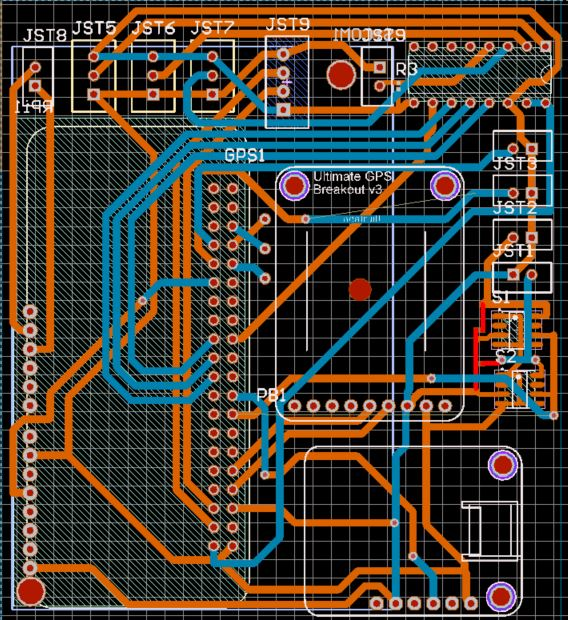
This is a screenshot of the design from Altium Circuitmaker. I excluded the
polygon pour (which means less acid is necessary to etch the PCB)
so that the bottom layer (shown in blue) is more visible. I used a plastic
based spray paint that I found at work to cover the PCB, and clamped it so
that it could dry.
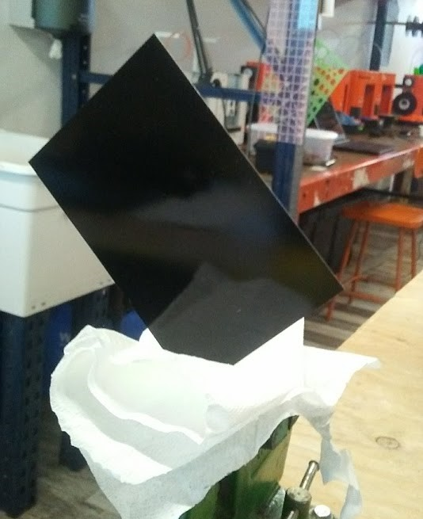
I've found that certain spraypaints work better than others when being
etched on a laser, and I've found that running the job twice helps to clear
up a lot of the residue that would slow down the etching process.
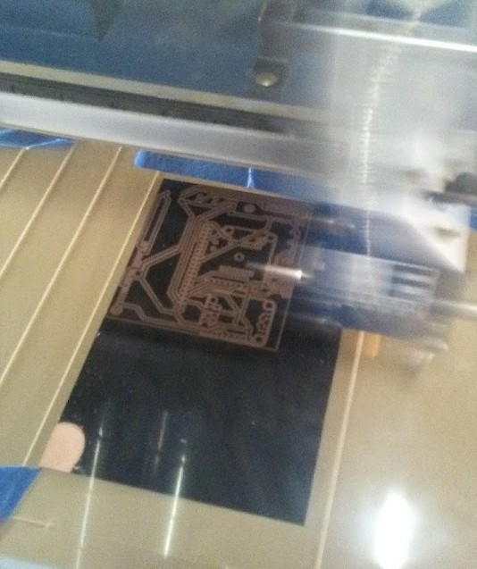
This is the PCB while it was being etched in a 60 watt Epilog Fusion. By
cutting a rectangle with the dimensions of the PCB blank, pretty precise
alignment is possible. When one side was finished, the PCB was flipped over
to etch the opposite side.
After the PCB had been etched, it was possible to see through the laminate
in the areas where copper had been removed from both sides (such as around
vias and headers). Unfortunately, it was pretty clear that the two sides were
not perfectly aligned, and further inspection indicated that the PCB blanks
were not really rectangular.
This was only the beginning of our problems - but we did find a solution.
By painting only one side of the board, holes drilled in 3 vias could be
used to align a vinyl cut negative on the other side. I spray painted over
this and peeled off the vinyl before it was dry, then etched the PCB with
ferric chloride as usual.
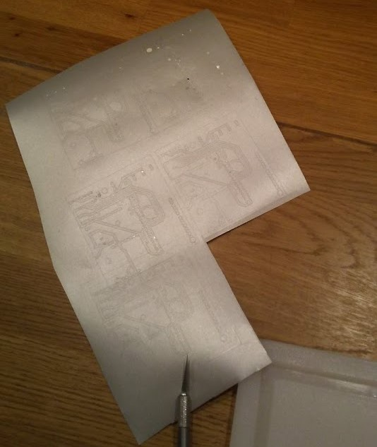
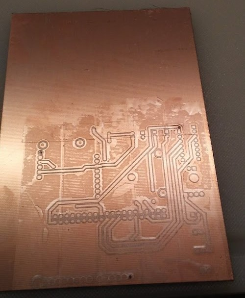
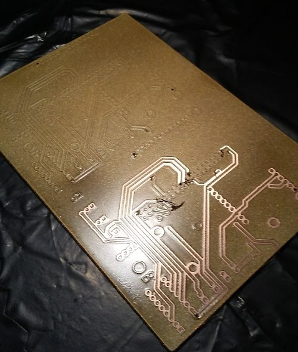
After etching and assembling this PCB, we realized that our sensors were
all digital devices, not analog ones. We are still in the process of creating
a new revision.
scatter.cloud
Scattercloud is, at its simplest, a blockchain. The scatter.cloud blockchain
(hereafter SCA) is designed to facilitate fast and byzantine fault tolerant
transactions between clients on the network, using a derived consensus model
for mitigating forks in the blockchain. Information on the development of
SCA will be posted here, as well as code and instructions for accessing and
developing on the blockchain.
Microscopes
I love microscopes! I was (and still am) inspired by the things they reveal,
and with such simplicity! I've had a number of opportunities to design
modifications to a cheap brightfield microscope, and I've compiled them here.
These modifications have bene tested on Zenith school microscopes and an
AmScope brightfield microscope I have access to at home.
I have also included a discussion of a variant of
Dan Berard's STM I built a while ago, and a few other microscope hacks
I've found and tested. Most of the images are of tissue paper at 100 to 400
times magnification.
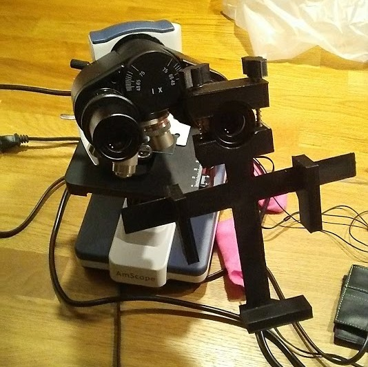
 These pictures show a phone camera mount for a microscope that I designed in
FreeCAD. The mount is inspired by
ggoss' Universal Camera Phone/Microscope Adapter on Thingiverse, and
was used to take all of the pictures in this section. For those who are
interested, the STEP file can be downloaded here.
These pictures show a phone camera mount for a microscope that I designed in
FreeCAD. The mount is inspired by
ggoss' Universal Camera Phone/Microscope Adapter on Thingiverse, and
was used to take all of the pictures in this section. For those who are
interested, the STEP file can be downloaded here.
The first modification changes a traditional brightfield microscope into
a darkfield microscope, which provides better contrast by showing an
illuminated sample on a dark background.
Brightfield microscopes block the light coming directly up through the
condenser, so that the only light that passes the sample would miss the
objective lens. However, some of the light that hits the sample is
diffracted, and passes into the lens. Only the sample causes the light to
be redirected, so the sample glows on an otherwise dark field, hence the name.
This design is an improvement on the "One-Penny Darkfield Illumination Filter",
described here.
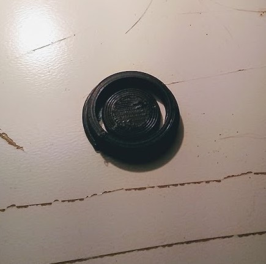
The disk is designed to fit inside the diaphragm of a Zenith microscope,
so that a user can switch between darkfield and brightfield by rotating the
diaphragm. Here are the results:
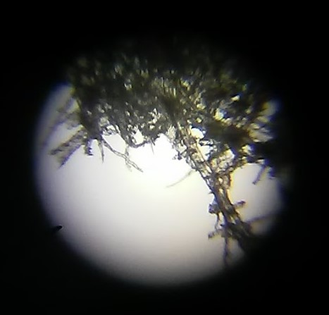
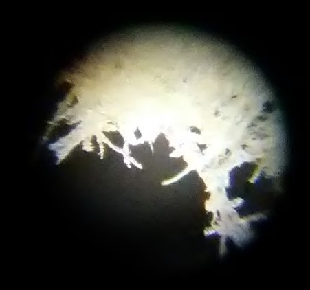
These images are good for illustrating the differences between the two
microscopes, but they are poorly focused (my piece of tissue paper was not
very flat). Better clarity can be achieved using a slide and a smaller
sample:
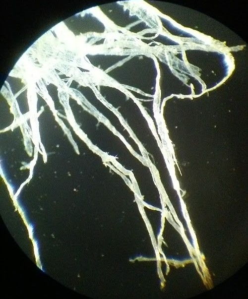
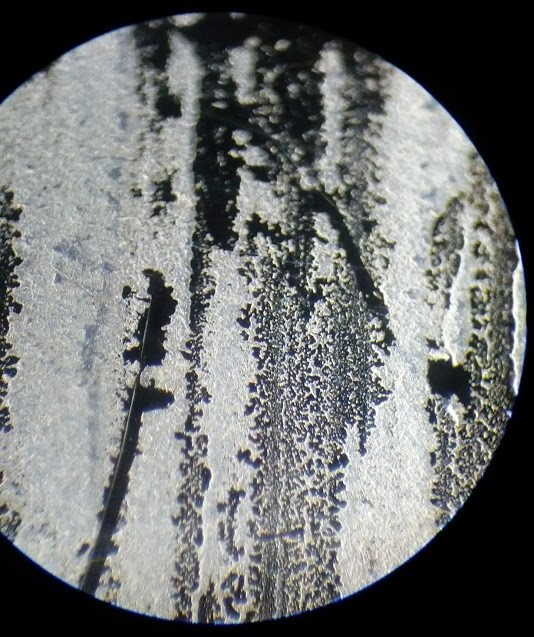
The details become much easier to see under a darkfield microscope (and they
look cooler too!). The file for the occulting disk is here.
The next hack is much more interesting, but the lack of an appropriate sample
makes the images slightly less picturesque. By illuminating a flourescent
sample with UV light, it can be caused to glow. By using a highpass filter
to block the UV light, only the light from the sample is visible, so certain
proteins or indicators (like GFP) can be used.
For each of these samples, I used tissue paper that had been marked with
highlighter, because it was flourescent (and I could not afford or effectively
use flourescent samples).
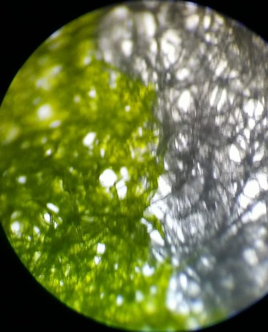
This image shows the contrast between the flourescent (highlighted)
and normal fibers in a brightfield microscope. The image is poorly focused
because the sample was too large, and the highlighter prevented me from using
water or a coverslip.
The first iteration of this design was created using a stack of purple plastic
rectangles cut from a divider in one of my binders, and a set of safety
glasses with yellow lenses. The purple sheets were placed on top of the
light beneath the stage, and acted as a filter.
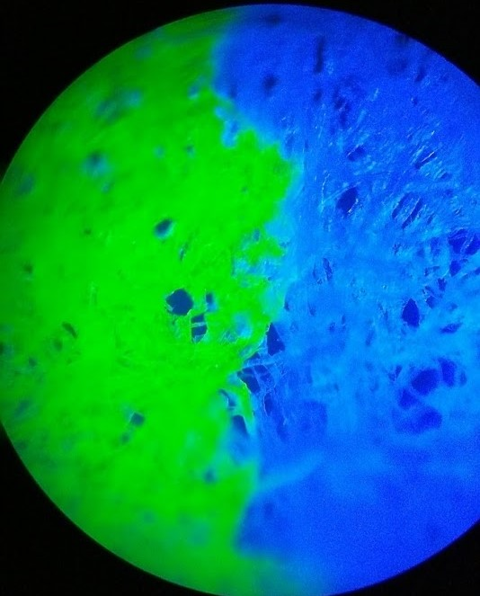
It worked! Sort of. Although the highlighted side is much more clearly distinguishable,
ideally, the non-flourescent areas should be invisible. Additionally, using
a filter to create high frequency light assumes that the microscope's bulb
already produces light of that wavelength. I removed the lens on the bulb on the
AmScope microscope, and its tungsten filament bulb worked. The Zenith school
microscopes did not work so well.
With this in mind, I purchased an LED
from Mouser ELectronics with a wavelength of 475 nm, selected to be the highest
wavelength that could (theoretically) excite GFP. I also purchased a 510nm
longpass filter from
Knight Optical. The acrylic filter itself was only six Euro, but with
shipping, handling and tax, I ended up being charges almost $30. With that
in mind, the filter was removed from consideration as a possible component
in the final solution, but it would still be useful for comparison.
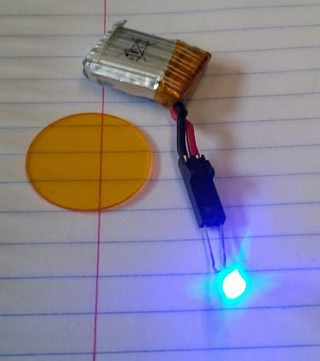
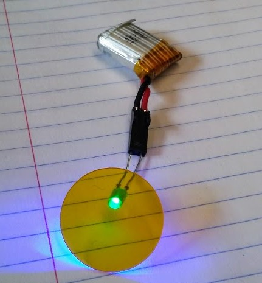
The filter significantly decreases the brightness of the LED, and the datasheet
indicates that very nearly 100% of light under 500nm is blocked out, so
the remaining light should all be a result of a wider wavelength range coming
from the LED.
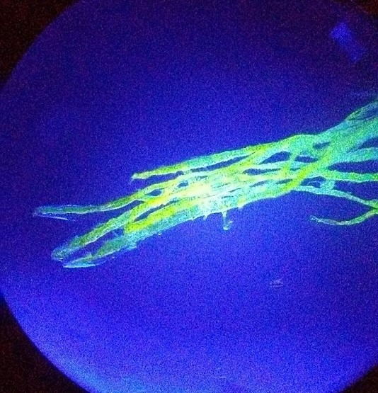
The led did create more contrast (using a different sample, obviously),
but light pollution (if you will) from the LED that was not blocked by the
filter made the sample hard to look at. Using a darkfield occulting disk
in conjunction with the LED did a lot to solve this problem.
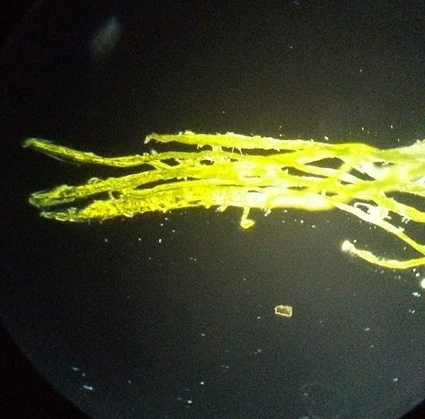
This modification works even without the lense, depending on the sample.
More work will be done to create cheaper and more effective longpass filters,
ideally with adjustable thresholds for use with different indicators. It is
important to note that this microscope only works in the dark, or with a
towel or jacket wrapped around the stage and objective lenses.
I have not limited myself to optical microscopes. After trying (and failing)
to find instructions online for building a scanning electron microscope, I
stumbled upon Dan Berard's STM. Dan Berard
had taken a concept originally described by John Alexander and developed
a functional and refined STM using a piezo element. I would highly recommend
Dan Berard's website for nayone who is interested in this project, his
descriptions are incredibly clear and he has made available everything you
need to create your own. So that is exactly what I did.
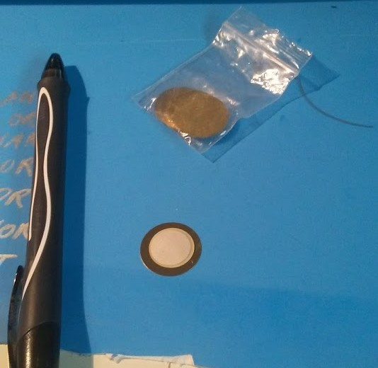
At the heart of the STM is a piezo amplifier. They are used to build impact
sensors and guitar amplifiers and they are extremely cheap: I purchased this
bag of 20 on ebay for only $3. The thin white layer on the piezo disk is
piezoelectric ceramic, which flexes when electricity is passed through it.
John Alexander showed that by cutting the ceramic into four quarters, the
disk could be made to flex in a specific way.
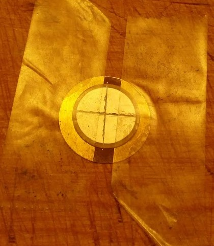
An atomically-sharp tip is made by shattering tungsten wire with a set
of wire cutters, and then mounted on the center of the piezo disk. An
oscilloscope sends a sine wave to the piezo scanner, which moves back and
forth, and the current flowing from the tip to the sample surface is
amplified and measured, which creates an image. I used John Alexander's
amplifier circuit because it is simpler, albeit less refined, and remade the
circuit on Fritzing to prepare it for breadboarding (yep, I did that).
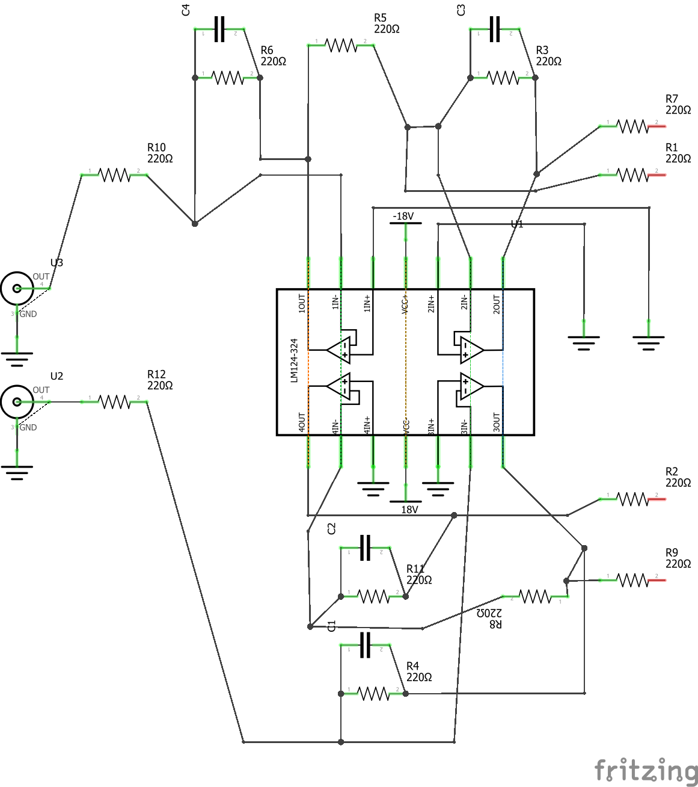
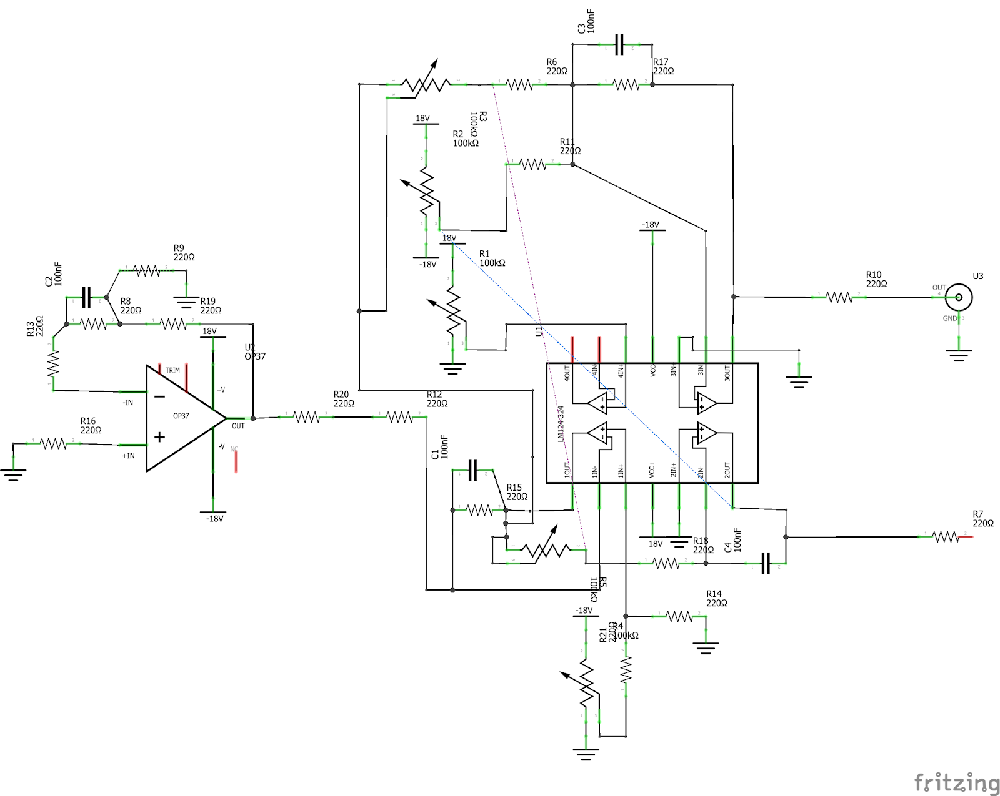
These are my adaptations of John Alexanders XY Controller (top) and amplifier
(bottom) circuits, done in Fritzing. These schematics are ideantical to those
published on Alexander's Website,
but re-creating them in Fritzing allowed me to manipulate them and alter the
layout. I ordered the parts from Mouser Electronics, and started designing
the mechanics of the STM.
This is what I put together in FreeCAD:
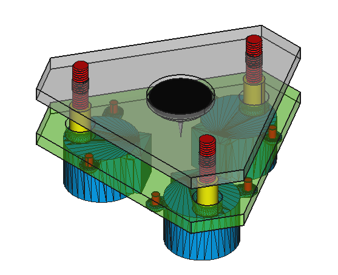
Everything about this design is inspired by Dan Berard's STM, with acrylic
plates for vibration isolation and three BYJ-48 stepper motors instead of
one for full range of motion. The STEP file for this design is available
here.
I learned then that cutting acrylic without a laser cutter (a convienience
I had yet to have access to) is hard. The top and bottom plates were
not straight, but the edges did not matter as long as the holes were all
aligned. I had more difficulty mounting the stepper motors to the acrylic,
because the screws would fracture the plastic as I inserted them. Here is the
final STM:
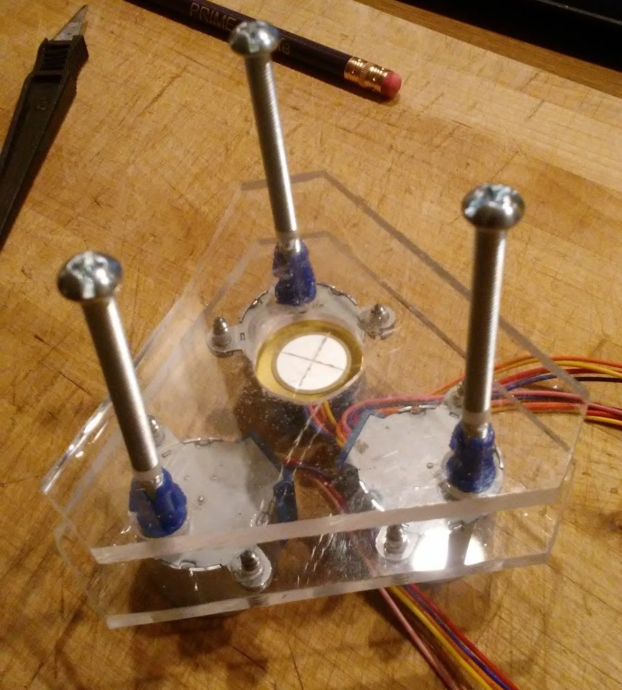
To further isolate vibrations, I used sections cut from three drywall anchors
to couple the stepper motors to the actuators. Now it was time for electronics:
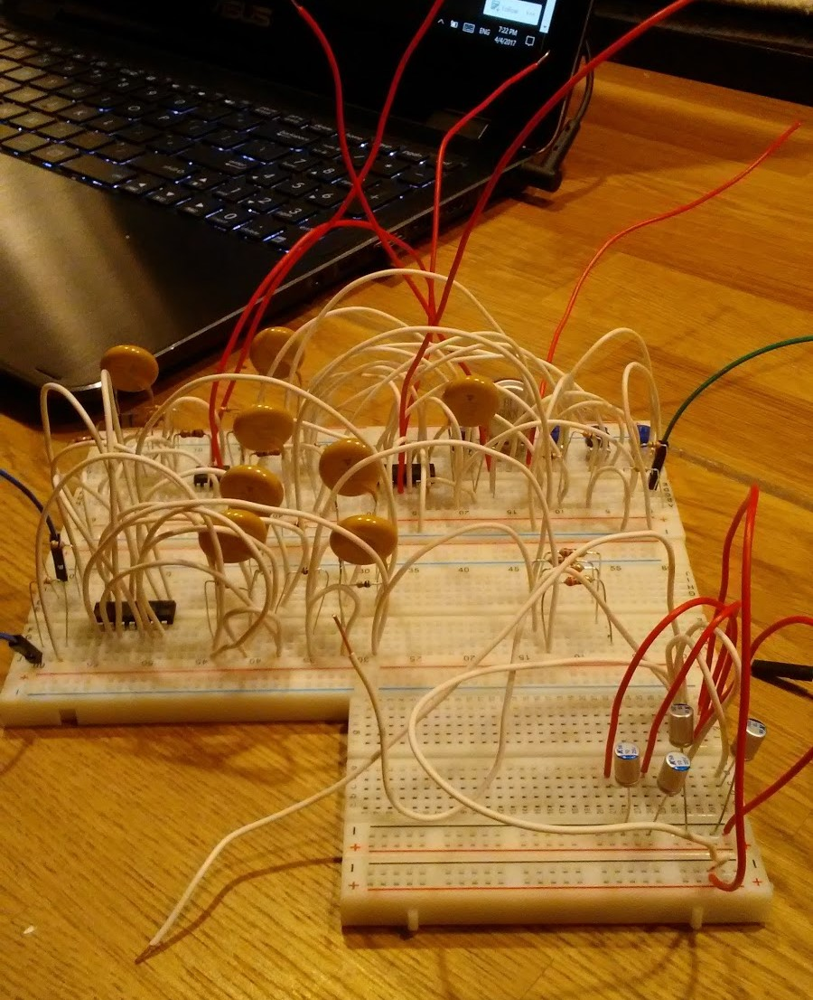
A relatively simple circuit became incredibly hard to manage when built on
a breadboard. After hours of finding problems and adjusting component positions,
I finally recieved a signal. I combined the electronics with the mechanical
components, and I was ready to run my first test.
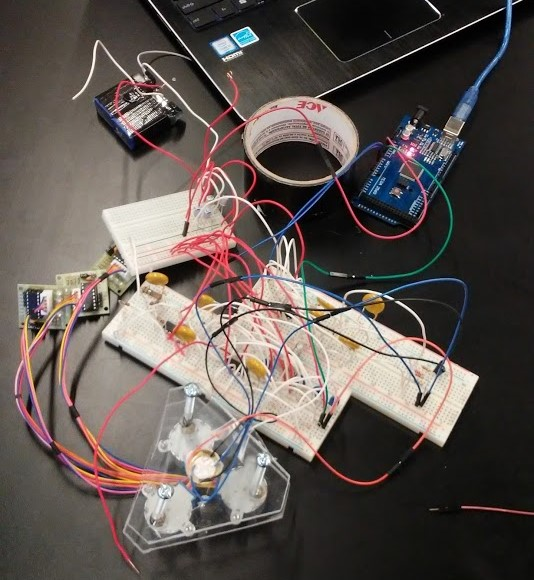
The Arduino Mega acted as the oscilloscope required to send a signal to the
probe, while an Arduino Uno measured the signal from the amplifier circuit.
A script written in Processing showed the oscilloscope readings on my computer
screen. The BYJ-48 Happy Drivers are disconnected after homing to prevent
wobble, an idea suggested by Dan Berard.
These readings are the closest that my STM got to being operational:
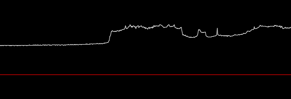
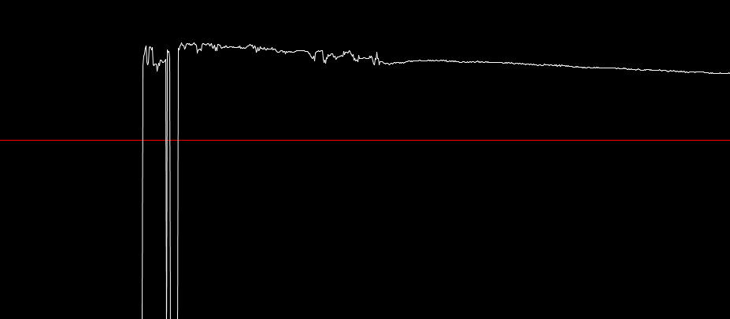
The first image shows the readings when power is first sent to the STM,
after which it begins scanning. The second shows the reading I received
after accidentally crashing the tip into the sample (a piece of flattened
copper wire). It is quite likely that these readings are entirely insignificant,
or merely due to static.
I have since scrapped the STM for its components, but I really would like
to try the project again, armed with a better understanding of electronics
and the ability to make PCBs, which would help with debugging and analysis.
Kites/Drones
Kites are really simple and really fun. Very little beats being outside on
a windy day with a kite... except maybe FPV kites.
After being frustrated by the short duration of FPV drone flights, flying
a kite seems almost too good to be true, especially when you have two
people. The only difficulty is in positioning the camera so that it does
not flap in the wind. The first step is building a kite.
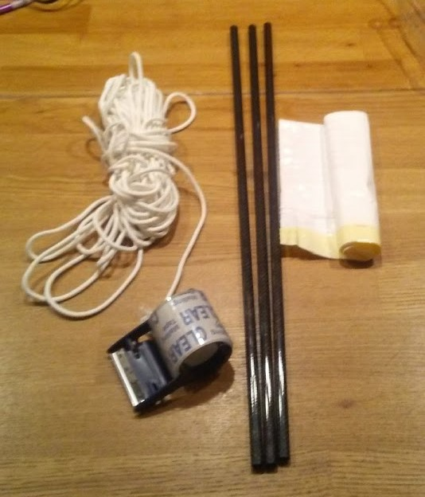
The parts for the kite include a few sticks (I had three carbon fiber
tubes laying around, but they certainly aren't necessary), a trash bag,
some tape, string, and three sheets of paper. Tape the sticks together to
form a diamond, and cut open the trash bag.
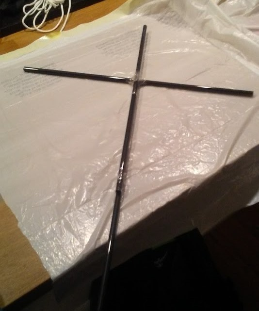
Cut the trash bag to fit around the cross, and attach a length of string
to the cross spar.
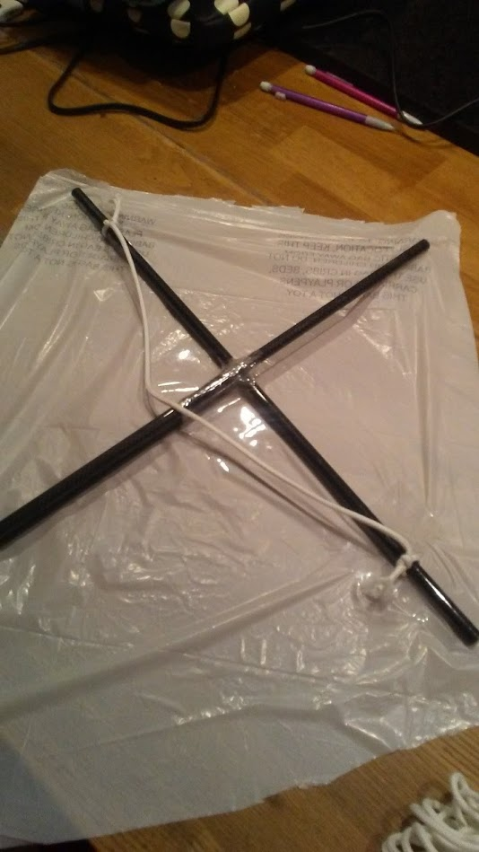
A piece of tape on the inside of the string keeps it from falling inward.
To create a streamer, remove the drawstring from the bag (you might have
to cut it in half), and tape it to the bottom of the kite. Cut a sheet
of paper in half, and crumple the middle until it forms a bow. Repeat
these steps until you have six bows, then tape these to the streamer. The
kite is ready to fly!
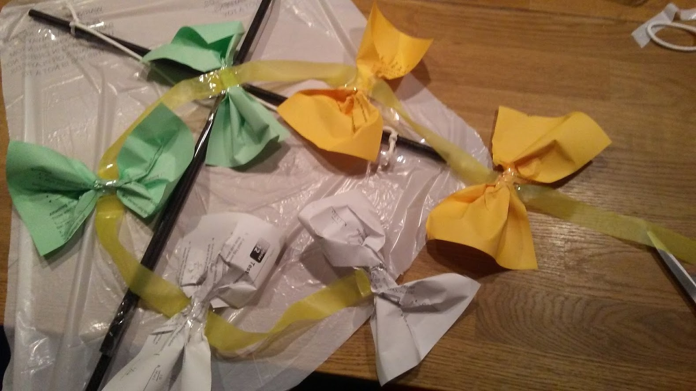
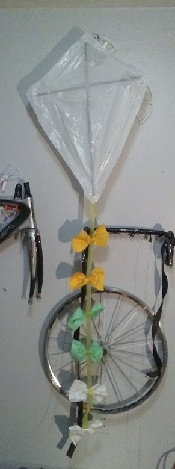
The FPV setup is also incredibly simple. I 3D printed a set of VR goggles
from Kuutio3D on Thingiverse,
and set up a 5.8 MHz reciever for a cheap FPV camera. I crimped header pins
onto a battery and onto the leads on the camera, so they can be clipped
together easily.
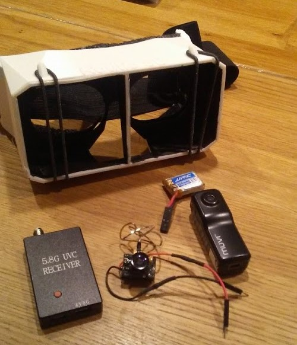
The camera was the cheapest I could find on the internet, so the images
aren't great, but they are still pretty entertaining:
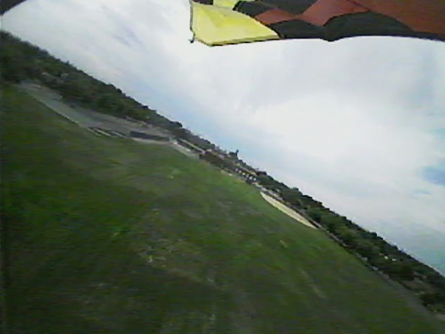
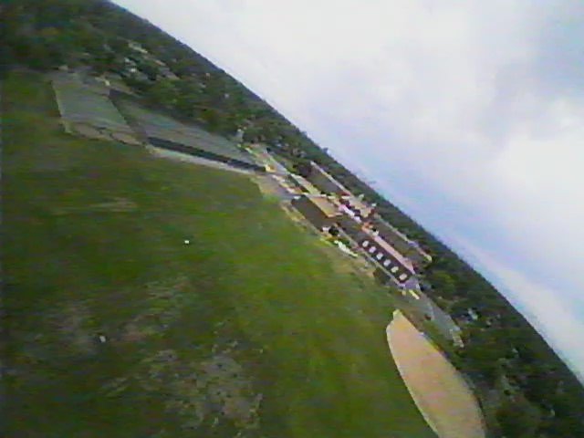
Of course, it is nice to have control over your direction, and for that,
we have drones. Due to the popularity of drone piloting, building and
flying all kinds of drones is pretty straightforeward. My best-documented
drone project was for an engineering class in 2017.
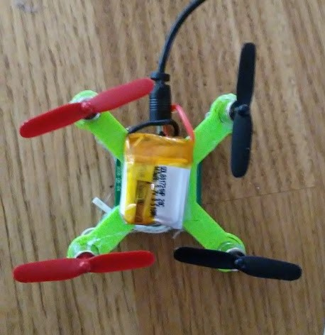
This drone was built from parts scavenged from other drones, fit into
a body that was stress tested and designed for weight. The body was
designed in an educational version of Autodesk Inventor Professional
CAD software.
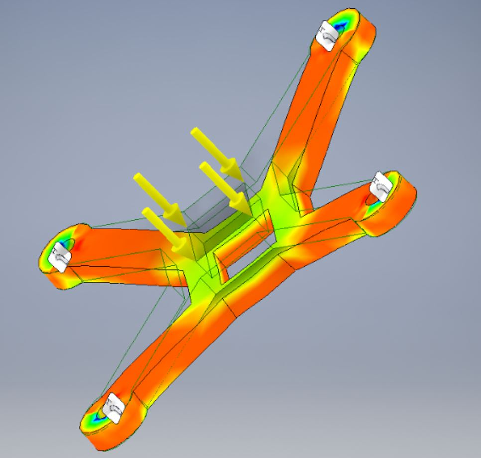
After 3D printing, each of the parts snapped in, the battery was glued on
top, and the drone flew!
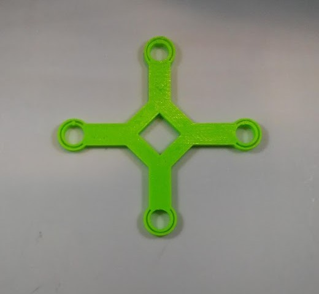
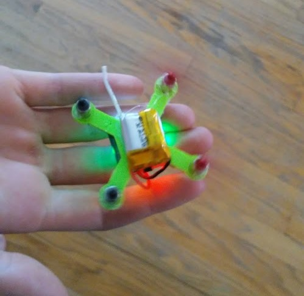
Recently, I became more interested in building rc planes instead of quadcopters
because of greater efficiency and load capacity. I don't have pictures of all
the builds, but here are each of the finished planes (not all of which flew).
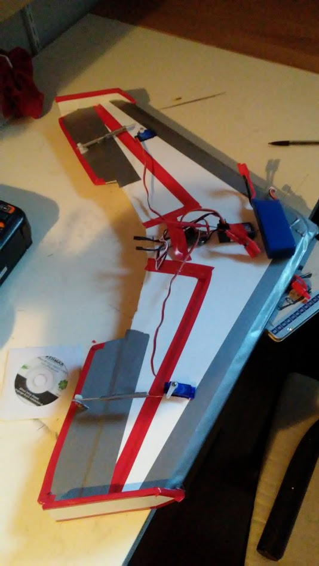
It's pretty obvious why this plane didn't fly. The enormous battery on the
nose threw it into a dive within a few seconds of launch every time.
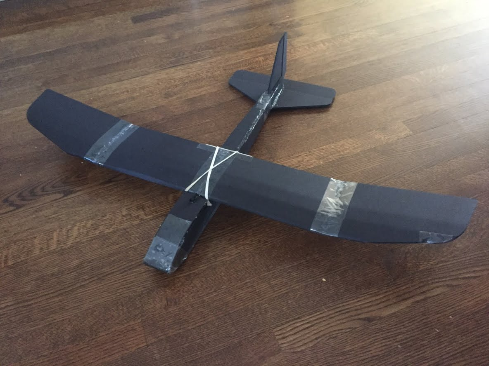
After my failure with the first flying wing, I decided to go back to the
basics. My friend and I built the Flite Test Tiny Trainer.
This plane glided beautifully, but we did not have a programmable electronic
speed controller, so we did not put a motor on it. We still have the plane,
and the only thing preventing us from flying it is time.
This was the ultimate glider project. Designed after the Horton H IV, this
glider was built out of choroplast for stiffness and waterproofing, and
could support a pushed propeller as well. The plan is to tow this plane
behind a kite, then release it with a servo and fly it to the ground using a
remote control.
The glider is built with a steep airfoil and dihedral wings for stability at
low speeds, and uses only three channels. Like the flying wing, the elevator
and aileron functions are combined using a V-Tail mixer.
Finally, setting all elegance aside, there are blimps. This project is more
silly than useful or cool, but in retrospect it was one of the most fun things
I've built all year.
This project was done with my sister on a weekend with nothing else to do. We
removed the electronics from a cheap 2 channel RC car, and replaced the
electromagnet used for steering with a small dc motor from a drone. We fixed
propellers onto each of the motors' shafts, and attached them, at right angles,
to the bottom of a helium balloon we bought at a grocery store. By adding coins,
we could make the balloon slightly less than neutrally bouyant, and by angling the
propeller downward, we could control both the height and the foreward
velocity of the balloon simultaneously. The othe rmotor was used for steering.
The blimp flew remarkably well. The incredibly slow speed and low risks
involved with collisions meant that it was not as difficult to fly as one
might expect (untill all of the helium leaked out of the mylar).
Rocket Engines
This was probably the most entertaining project I have worked on recently.
A series of discussions with my chemistry teacher about the role of iron
oxide in dry rocket fuels demanded experimentation, and after researching
rocket candy online, I realized that it would be very possible to create
solid fuel rocket engines without any expensive materials or special equipment.
These are the only things you need to make rocket candy, in fact, you could
probably get away with just the potassium nitrate and sugar. The postassium
nitrate is a strong oxidizing agent: when it is added to the sugar (which
would burn slowly anyway) it speeds up the reaction to the point where
the exhaust gasses produce meaningful thrust.
In my recipe, corn syrup is used as a binder until the melted sugar is added,
which results in a pretty gooey mixture until it dries. It is also very
popular to add Iron Oxide, presumably as a catalyst, to increase thrust
and burn rate.
I started by making a bunch of paper mache tubes for the motors, each with
a capacity of 5ml. This proved to be a mistake, because the tiny surface
area of the fuel column caused an extremely slow burn rate.
As it turns out, black iron oxide is the key ingredient in a lot of toners,
which explains the inky black color. After adding the melted sugar (outside,
wearing PPE and with a fire extinguisher handy), it was time to fill the
tubes with rocket fuel.
This was not as easy as I thought it would be. As the sugar cooled, the
fuel became hard and chunky, so it was difficult to pack into the tiny
tubes. Additionally, the fuel was extremely sticky and it would stain anything
it came into contact with.
When all the fuel was packed into tubes, I wrapped them in one more sheet
of blank paper, and they were ready for testing.
It is illegal to launch a rocket with a custom motor (like the ones I built)
in the United States without a liscence, which I am inelligible for because
I am not yet 18. It is not illegal, however, to burn these motors on the ground,
so I built a small mount using a few bricks and tested them in my backyard.
 As you can see, the motors did not produce spectacular plumes of exhaust.
This is a consequence of two things: first, the rediculously small amount
of fuel in a long tube yielded a long burn time with very little thrust.
Additionally, the paper mache tubes were not completely dry, so they did
not burn away as they should have.
As you can see, the motors did not produce spectacular plumes of exhaust.
This is a consequence of two things: first, the rediculously small amount
of fuel in a long tube yielded a long burn time with very little thrust.
Additionally, the paper mache tubes were not completely dry, so they did
not burn away as they should have.
I will be rebuilding these engines with different amounts of FeO and Fe2O3,
with a larger surface area and thinner tubes.
Biofuel (Pyrolysis)
Returning to the "money or science" solutions to global warming, what
better way to prevent greenhouse gasses than by synthesizing oil? During
WWII, the British used "syngas" to fuel cars and tractors, and it amazed
me to learn that we have been capable of producing oil from complex hydrocarbons
for decades, and yet no one was working on producing refined gasses (like
petroleum) from waste biomass.
In an attempt to better understand the hurdles we were facing, I decided
to build a pyrolysis reactor. The principle of operation is that heat and
pressure cause longer hydrocarbons to break down. Lower London dispersion
forces in these molecules means a lower boiling point, and when they
reach the appropriate size, they flow up through a condenser and drip
into a container.
My reactor was built from a bucket with a refrigeration coil flare-fitted
to the lid. This provided an airtight reaction chamber that could be easily
opened and inspected, although soldering the flare fitting to the lid of
the paint can was not easy. I ran the refrigeration coil through a bucket
of water to enhance cooling, but removed it later because condensed
gas in the coil in the bucket caused a rise in pressure in the container.
I managed to extract about 60ml of gas from a few apple cores, dried leaves
and sticks, and 30ml from scrap PLA from 3D prints. I did not control for
input volume so these numbers do not reflect efficiencies.
I did note a huge difference in color between the PLA and organic matter -
the PLA produced a much clearer oil. This is most likely attributable to the
consistency of the material in the PLA trial, and the PLA had already been
processed. I will work on distilling and refining these samples with my
chemistry teacher.
Random/Pictures
I have so many more projects that I neglected to document, or that just
weren't worthy of mention on their own. I've included pictures and brief
descriptions here.
This is a delta 3D printer I designed for my friend, who I was working with
to build a printer capable of printingin aluminum using a MIG welder. We never
bought the welder (turns out they are pretty expensive), so we never used it.
I need a breadboard... why not 3D print one? ...because you need clips.
Tin foil works extremely well until it falls apart.
Board games are fun, especially Go and Chess. Unfortunately, it's hard to
keep a set handy at all times (and nice go sets can cost $30), so I've
found myself making my own more often than I'd like to admit. I use the
black Go set all the time; all the lines were made in a scrap of chalkboard
with a eye bolt and a ruler, and the pieces are knots of rope tied by
rope with the ends sealed with a candle.
This project was so much fun! My friend and I decided we were bored with
3D printing and wanted something slightly more dangerous, so we went to
Home Depot and bought 2' by 4' sheet of 3/5" MDF, and built a CNC machine.
At the time, however, neither of us were old enough to drive, so we had to
tie the MDF to my bike, and run it back to his house. The CNC machine
worked, but we were both hired by Mindcraft Makerspace within the month
and the laser cutters there made our CNC machine pale in comparison.
Over the last few years I've accumulated several kilograms of PLA scraps
from failed 3D prints, and I needed a way to recycle them. PLA filament
costs $25 per kilogram, so when I heard that it could be recycled, I built
a small single-screw extruder. The rig worked, but to get high quality
filament, the pieces of plastic fed into the extruder had to be really
small. The next leg of this project will be to design a plastic grinder.
The first time I used a third arm for soldering, I knew I had to have one.
In true maker spirit, I decided that buying aligator clips on Amazon
would be cheaper than buying a third arm. I crimped the clips to two
12 gauge wires wrapped around each other, and covered each of the teeth with
heat shrink, and voila! Functional 3rd arm! I bolted three arms to my
work surface (an old cutting board), and I was ready to go.
<<<<<<< HEAD
 =======
=======
 >>>>>>> origin/master
This project was, in every regard, my biggest failure (and that is saying
a lot). My biology teacher had asked me to build a spectrophotometer for the
school, which seemed simple enough. For those who are unfamiliar, a
spectrophotometer analyses the concentration of a sample by measuring the
transmittance of the sample as different wavelengths of light are shined
through it. Seems simple enough...
>>>>>>> origin/master
This project was, in every regard, my biggest failure (and that is saying
a lot). My biology teacher had asked me to build a spectrophotometer for the
school, which seemed simple enough. For those who are unfamiliar, a
spectrophotometer analyses the concentration of a sample by measuring the
transmittance of the sample as different wavelengths of light are shined
through it. Seems simple enough...
I mounted a fragment of a CD onto a servo motor, wired an incandescent bulb
(for full wavelength) to an arduino set up with a photocell, and measured
the absorbance as the servo moved a spectrum across the photocell. Nothing.
This first attempt is the topmost picture above. When that didn't work, I
decided to pursue a finite number of datapoints by using LEDs. I designed
a new circuit to light one LED at a time and measure that absorbance, and
I built it on protoboard (having been freshly traumatized by the
STM breadboard) and it worked! All I had left to do was replace my Arduino
Uno with the smaller Adafruit Pro Trinket!
I did not know that the Pro Trinket does not have serial communication.
After a week or so of trying to solve the why-can't-I-access-the-readings
problem, I destroyed the bootloaded and never succeeded in reloading it
(I needed the very FTDI cable that could have saved me all that trouble in
the first place). By that time I had run out of energy and transferred to
East High School, so I gave up. If I have time, I would really like to
take on this project again, with better judgement and more experience.